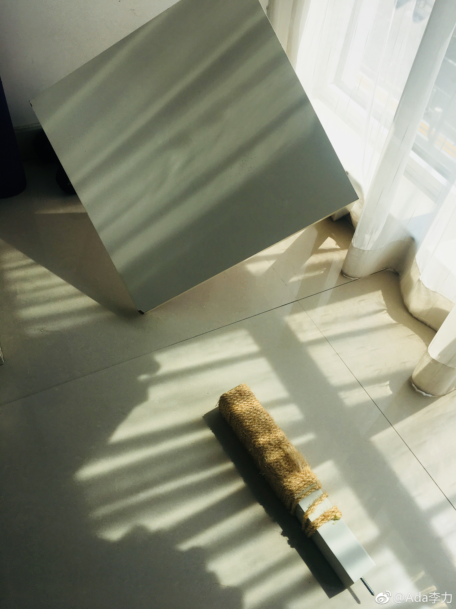

家里发生件奇怪的事情，阳台上的桌子腿被卸下来一只。询问半天，结论是只能是猫弟小辉干的。但是对于它是怎么做到的，百思不得其解。
小辉仍是一脸无辜像。姣姣说，它这点也像我，只是表面上乖乖滴。
Sherlly说这表明#姣姣#对自己认识很深刻。我说她对父母也认识深刻呢，早看穿了我们色厉内荏的本色。于是她自己发展出一套应对办法。
举个例子来说，曾经姣姣在超市阻拦我买东西把我惹火了，回家路上在车里的时候，我吼骂她一顿。姣姣就一直听着，等我骂完了，她说：“妈妈，你别生气了，我以后不说了”。她的冷静回复倒是让我很囧，好好地反思了下。
最近跟姣姣复盘这个好几年前的事，是为了表扬闺女会说话，会安抚人。姣姣边听边点头，末了加上一句：“我心里说，以后还是要继续说你的”。哎~,怪不得有朋友评论我斗不过闺女。
亲戚们一直认为姣姣是乖乖女，只有慧慧早早看出本质，她说姣姣很bossy。
小辉仍是一脸无辜像。姣姣说，它这点也像我，只是表面上乖乖滴。
Sherlly说这表明#姣姣#对自己认识很深刻。我说她对父母也认识深刻呢，早看穿了我们色厉内荏的本色。于是她自己发展出一套应对办法。
举个例子来说，曾经姣姣在超市阻拦我买东西把我惹火了，回家路上在车里的时候，我吼骂她一顿。姣姣就一直听着，等我骂完了，她说：“妈妈，你别生气了，我以后不说了”。她的冷静回复倒是让我很囧，好好地反思了下。
最近跟姣姣复盘这个好几年前的事，是为了表扬闺女会说话，会安抚人。姣姣边听边点头，末了加上一句：“我心里说，以后还是要继续说你的”。哎~,怪不得有朋友评论我斗不过闺女。
亲戚们一直认为姣姣是乖乖女，只有慧慧早早看出本质，她说姣姣很bossy。
- 